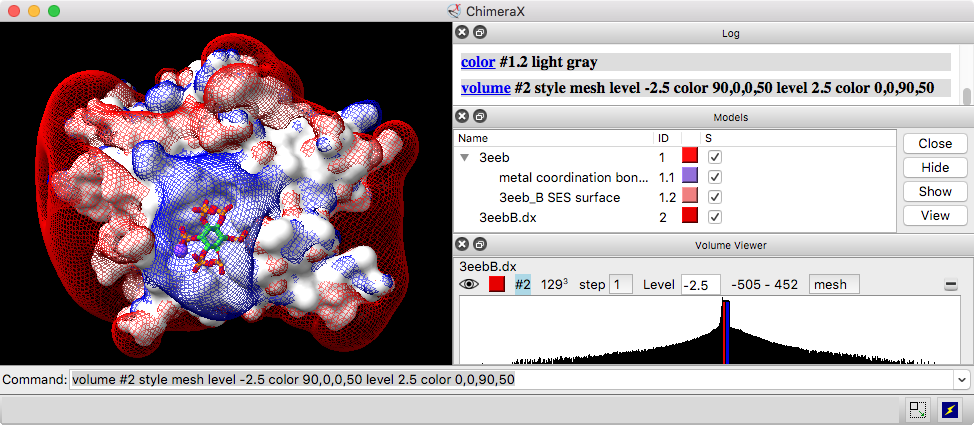

|  |
Volume data is a broad term for density maps, electrostatic potential maps, 3D imaging data, and other data sets with numerical values associated with points on a 3D grid.
Volume Viewer is a graphical interface for adjusting contour levels and other aspects of volume data display. Alternatively, these settings and more can be adjusted with the volume command. Volume data can be opened with the command open (which automatically starts Volume Viewer) and saved to a file with save. See also: Density Map Toolbar, show, color, transparency, vop, vseries, molmap, fitmap, sop
The Volume Viewer window can be manipulated like other panels in ChimeraX (more...).
By default, a data set will be displayed automatically if it does not exceed a certain size (see volume command option showOnOpen), although it may be subsampled (see volume command option limitVoxelCount).
A histogram of values is shown for each data set. Above the histogram (from left to right) are:
The step setting controls subsampling; a value of 1 means all the data points are used to generate the display, while 2 means every other data point is taken along each axis, reducing the number of points used by a factor of eight. Step sizes can be different in the X, Y, and Z directions, although this can only be set with the volume command step option (not with the graphical interface).
The display region is not necessarily the full extent of the data grid; it can be limited with the volume command region option.
The thresholds on the histogram control how data values are mapped to the display:
surface or mesh
Each threshold (contour level) is shown on the histogram as a vertical bar that can be moved horizontally. For unsigned data types, an initial threshold is set so that 1% of voxels (1% of the volume encompassed by the data region) lie above it; for signed data types, positive and negative thresholds are placed symmetrically about zero.
image
Each threshold is shown as a small square that can be moved horizontally and/or vertically. For unsigned data types, initial thresholds are set to give zero intensity for the 10% of voxels (in the data region) with the lowest values, scaling up to 0.99 intensity for the 1% of voxels with the highest values; for signed data types, positive and negative thresholds are placed symmetrically about zero. The thresholds and connecting lines on each histogram define a transfer function that maps data values to colors and intensities. The rightmost threshold does not have to be at the far right of the histogram, and a threshold at a lower data value can be higher (vertically) than a threshold at a higher data value.
Thresholds can be added or deleted using the context menu from right-clicking* on the histogram. Each threshold is shown in the same color as its display. The color and level shown above the histogram apply to the threshold most recently moved or clicked. The color, including opacity, can be changed by clicking the color square and using the resulting color chooser. The level can be changed by entering a different value or by dragging the threshold. Holding the Shift key down reduces the speed (mouse sensitivity) of threshold dragging tenfold, allowing finer control.
Histogram ranges and threshold levels are given in the same units as the data. The volume command also allows specifying threshold levels in units of root-mean-square deviations from zero or standard deviations from the mean.